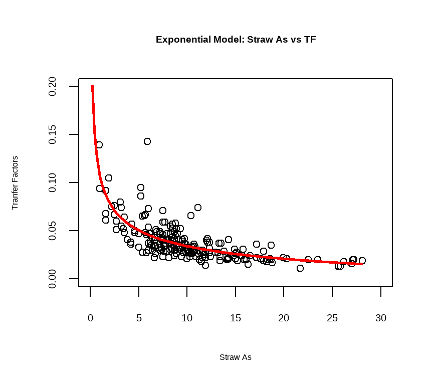

Table of Content
Load Library
In this exercise We will use following R-packages:
# load library
library(tidyverse)
library(dlookr)
library(moments)
library(car)
library(plyr)
library(data.table)
library(DT)
library(Hmisc)
library(corrplot)
library(corrr)
library(gridExtra)
library(ggExtra)
library(BSDA)
library(GGally)
library(agricolae)
library(multcomp)
library(multcompView)
library(ggfortify)
library(report)
library(ggstatsplot)
library(ggfortify)
library(caret)
library(Metrics)
library(splines2)
library(AICcmodavg)
library(mgcv)Import Data
n this exercise, we use following data set:
water_soil_rice_arsenic_data.csv: Arsenic (As) data in irrigation water, paddy soil and and rice grain in a contaminated cites from Bangladesh
This data set could be found here.
We import this data using read_csv() from readr package.
# define working directory
dataFolder<-"E:/Dropbox/GitHub/chemstat-r-github.io/Data/"
df<-readr::read_csv(paste0(dataFolder,"water_soil_rice_arsenic_data.csv"))Data Preparation
First, we create a dataframe with rice straw As and transfer factor (TF, ratio grain and straw As). We will model TF with rice straw As with different types of nonlinear models.
# create a data-frame
mf<-df %>% dplyr::select(Straw_As, TF, Variety)
# Split data
tr_prop = 0.80
# training data (80% data)
train.df = plyr::ddply(mf, .(Variety),
function(., seed) { set.seed(seed); .[sample(1:nrow(.), trunc(nrow(.) * tr_prop)), ] }, seed = 101)
test.df = plyr::ddply(mf, .(Variety),
function(., seed) { set.seed(seed); .[-sample(1:nrow(.), trunc(nrow(.) * tr_prop)), ] }, seed = 101)Linear Regression Model
Fist we we develop a standard linear regression model equation that can be written as TF = b0 + b1*Straw_As.
# Build the model
model.ln <- lm(TF~ Straw_As, data = train.df)
# Make predictions
pred.ln <- model.ln %>% predict(test.df)
# Model performance
data.frame(
RMSE = RMSE(pred.ln, test.df$TF),
R2 = R2(pred.ln, test.df$TF)
)## RMSE R2
## 1 0.01193911 0.4810897Visualize the data:
ggplot(train.df, aes(Straw_As, TF)) +
geom_point() +
stat_smooth(method = lm, formula = y ~ x)+
ggtitle("Linear Model: Straw As vs Transfer Factors") +
xlab("Straw As (mg/kg)") + ylab("Transfer Factors)") +
# customized background and front size
theme(
panel.background = element_rect(fill = "grey95",colour = "gray75",size = 0.5, linetype = "solid"),
axis.line = element_line(colour = "grey"),
plot.title = element_text(size = 16, hjust = 0.5),
axis.title.x = element_text(size = 16),
axis.title.y = element_text(size = 16),
axis.text.x=element_text(size=13, colour="black"),
axis.text.y=element_text(size=13,angle = 90,vjust = 0.5, hjust=0.5, colour='black'))
From above plot, it looks like the relationship between TF and Straw As is a non-linear. We can visualize this relationship without lm function in stat_smooth() object. The resulted scatter plot suggests a non-linear relationship between the these two variables
Visualize the data:
ggplot(train.df, aes(Straw_As, TF) ) +
geom_point() +
stat_smooth()+
ggtitle("Straw As vs Transfer Factors") +
xlab("Straw As (mg/kg)") + ylab("Transfer Factors)") +
# customized background and front size
theme(
panel.background = element_rect(fill = "grey95",colour = "gray75",size = 0.5, linetype = "solid"),
axis.line = element_line(colour = "grey"),
plot.title = element_text(size = 16, hjust = 0.5),
axis.title.x = element_text(size = 16),
axis.title.y = element_text(size = 16),
axis.text.x=element_text(size=13, colour="black"),
axis.text.y=element_text(size=13,angle = 90,vjust = 0.5, hjust=0.5, colour='black'))Polynomial Regression Model
Polynomial regression is a form of non-linear regression analysis in which the relationship between the independent variable x and the dependent variable y is modelled as an nth degree polynomial in x.
In general, we can model the expected value of y as an nth degree polynomial, yielding the general polynomial regression model
The polynomial regression with 6th order can be computed in R as follow:
lm(TF ~ poly(Straw_As, 6, raw = TRUE), data = train.df) %>%
summary()##
## Call:
## lm(formula = TF ~ poly(Straw_As, 6, raw = TRUE), data = train.df)
##
## Residuals:
## Min 1Q Median 3Q Max
## -0.026086 -0.006930 -0.001616 0.004027 0.096789
##
## Coefficients:
## Estimate Std. Error t value Pr(>|t|)
## (Intercept) 1.300e-01 1.327e-02 9.796 < 2e-16 ***
## poly(Straw_As, 6, raw = TRUE)1 -3.516e-02 9.594e-03 -3.664 0.000317 ***
## poly(Straw_As, 6, raw = TRUE)2 6.067e-03 2.383e-03 2.546 0.011656 *
## poly(Straw_As, 6, raw = TRUE)3 -5.703e-04 2.699e-04 -2.113 0.035812 *
## poly(Straw_As, 6, raw = TRUE)4 2.832e-05 1.512e-05 1.873 0.062541 .
## poly(Straw_As, 6, raw = TRUE)5 -6.951e-07 4.052e-07 -1.715 0.087817 .
## poly(Straw_As, 6, raw = TRUE)6 6.616e-09 4.121e-09 1.605 0.110021
## ---
## Signif. codes: 0 '***' 0.001 '**' 0.01 '*' 0.05 '.' 0.1 ' ' 1
##
## Residual standard error: 0.01327 on 201 degrees of freedom
## Multiple R-squared: 0.5581, Adjusted R-squared: 0.5449
## F-statistic: 42.32 on 6 and 201 DF, p-value: < 2.2e-16From the output above, it can be seen that polynomial terms beyond the 3rd order are not significant. So, just create a 3rd polynomial regression model as follow:
# Build the model
model.poly <- lm(TF ~ poly(Straw_As, 3, raw = TRUE), data = train.df)
# Make predictions
pred.poly <- model.poly %>% predict(test.df)
# Model performance
data.frame(
RMSE = RMSE(pred.poly, test.df$TF),
R2 = R2(pred.poly, test.df$TF)
)## RMSE R2
## 1 0.01031963 0.614937Visualize the data:
ggplot(train.df, aes(Straw_As, TF) ) +
geom_point() +
stat_smooth(method = lm, formula = y ~ poly(x, 3, raw = TRUE))+
ggtitle("Ploynomal Model: Straw As vs Transfer Factors") +
xlab("Straw As (mg/kg)") + ylab("Transfer Factors)") +
# customized background and front size
theme(
panel.background = element_rect(fill = "grey95",colour = "gray75",size = 0.5, linetype = "solid"),
axis.line = element_line(colour = "grey"),
plot.title = element_text(size = 16, hjust = 0.5),
axis.title.x = element_text(size = 16),
axis.title.y = element_text(size = 16),
axis.text.x=element_text(size=13, colour="black"),
axis.text.y=element_text(size=13,angle = 90,vjust = 0.5, hjust=0.5, colour='black'))Log Transformed Model
When you have a non-linear relationship, you can also try a logarithm transformation of the predictor variables:
# Build the model
model.log <- lm(TF ~ log(Straw_As), data = train.df)
# Make predictions
pred.log <- model.log %>% predict(test.df)
# Model performance
data.frame(
RMSE = RMSE(pred.log, test.df$TF),
R2 = R2(pred.log, test.df$TF)
)## RMSE R2
## 1 0.01035142 0.6117803ggplot(train.df, aes(Straw_As, TF) ) +
geom_point() +
stat_smooth(method = lm, formula = y ~ log(x))+
ggtitle("Log Model: Straw As vs Transfer Factors") +
xlab("Straw As (mg/kg)") + ylab("Transfer Factors)") +
# customized background and front size
theme(
panel.background = element_rect(fill = "grey95",colour = "gray75",size = 0.5, linetype = "solid"),
axis.line = element_line(colour = "grey"),
plot.title = element_text(size = 16, hjust = 0.5),
axis.title.x = element_text(size = 16),
axis.title.y = element_text(size = 16),
axis.text.x=element_text(size=13, colour="black"),
axis.text.y=element_text(size=13,angle = 90,vjust = 0.5, hjust=0.5, colour='black'))Spline Regression Model
Somtimes polynomial regression captures a certain amount of curvature in a nonlinear relationship. An alternative, and often superior, approach to modeling nonlinear relationships is to use splines (P. Bruce and Bruce 2017).
Splines provide a way to smoothly interpolate between fixed points, called knots. Polynomial regression is computed between knots. In other words, splines are series of polynomial segments strung together, joining at knots (P. Bruce and Bruce 2017).
The R package splines2 includes the function bSpline for creating a b-spline term in a regression model.
We need to specify two parameters: the degree of the polynomial and the location of the knots. In our example, we’ll place the knots at the lower quartile, the median quartile, and the upper quartile:
# Build the model
knots <- quantile(train.df$Straw_As, p = c(0.25, 0.5, 0.75))
model.spline <- lm (TF ~ bSpline(Straw_As, knots = knots), data = train.df)
# Make predictions
pred.spline <- model.spline %>% predict(test.df)
# Model performance
data.frame(
RMSE = RMSE(pred.spline, test.df$TF),
R2 = R2(pred.spline, test.df$TF)
)## RMSE R2
## 1 0.01000908 0.6349857Note that, the coefficients for a spline term are not interpretable.
Visualize the cubic spline as follow:
ggplot(train.df, aes(Straw_As, TF) ) +
geom_point() +
stat_smooth(method = lm, formula = y ~ splines2::bSpline(x, df = 3))+
ggtitle("Spline Model: Straw As vs Transfer Factors") +
xlab("Straw As (mg/kg)") + ylab("Transfer Factors)") +
# customized background and front size
theme(
panel.background = element_rect(fill = "grey95",colour = "gray75",size = 0.5, linetype = "solid"),
axis.line = element_line(colour = "grey"),
plot.title = element_text(size = 16, hjust = 0.5),
axis.title.x = element_text(size = 16),
axis.title.y = element_text(size = 16),
axis.text.x=element_text(size=13, colour="black"),
axis.text.y=element_text(size=13,angle = 90,vjust = 0.5, hjust=0.5, colour='black'))Generalized Additive Model
Once you have detected a non-linear relationship in your data, the polynomial terms may not be flexible enough to capture the relationship, and spline terms require specifying the knots.
Generalized additive models, or GAM, are a technique to automatically fit a spline regression. This can be done using the mgcv R package:
# Build the model
model.gam <- gam(TF ~ s(Straw_As), data = train.df)
# Make predictions
pred.gam <- model.gam %>% predict(test.df)
# Model performance
data.frame(
RMSE = RMSE(pred.gam, test.df$TF),
R2 = R2(pred.gam, test.df$TF)
)## RMSE R2
## 1 0.01024984 0.6194859Visualize the GMA as follow:
ggplot(train.df, aes(Straw_As, TF) ) +
geom_point() +
stat_smooth(method = gam, formula = y ~ s(x)) +
ggtitle("GAM Model: Straw As vs Transfer Factors") +
xlab("Straw As (mg/kg)") + ylab("Transfer Factors)") +
# customized background and front size
theme(
panel.background = element_rect(fill = "grey95",colour = "gray75",size = 0.5, linetype = "solid"),
axis.line = element_line(colour = "grey"),
plot.title = element_text(size = 16, hjust = 0.5),
axis.title.x = element_text(size = 16),
axis.title.y = element_text(size = 16),
axis.text.x=element_text(size=13, colour="black"),
axis.text.y=element_text(size=13,angle = 90,vjust = 0.5, hjust=0.5, colour='black'))Three Parameter Exponential Model
Finally we fit a three Parameter Asymptotic Exponential Model using nls() function:
model.nls <- nls(TF ~a + b * Straw_As^(-c), train.df, start = list(a = 0.15, b = 0.01,
c = 0.3))
summary(model.nls)##
## Formula: TF ~ a + b * Straw_As^(-c)
##
## Parameters:
## Estimate Std. Error t value Pr(>|t|)
## a -0.03113 0.02749 -1.132 0.25886
## b 0.13760 0.02372 5.801 2.48e-08 ***
## c 0.32347 0.11213 2.885 0.00434 **
## ---
## Signif. codes: 0 '***' 0.001 '**' 0.01 '*' 0.05 '.' 0.1 ' ' 1
##
## Residual standard error: 0.01304 on 205 degrees of freedom
##
## Number of iterations to convergence: 5
## Achieved convergence tolerance: 4.159e-07# Make predictions
pred.nls <- model.nls %>% predict(test.df)
# Model performance
data.frame(
RMSE = RMSE(pred.nls, test.df$TF),
R2 = R2(pred.nls, test.df$TF)
)## RMSE R2
## 1 0.01016311 0.6227908xv<-seq(0,28,0.2)
yv<-predict(model.nls,list(Straw_As=xv))
plot(train.df$Straw_As,train.df$TF,
xlab="Straw As",cex.axis=1.25,
ylab="Tranfer Factors",
ylim=c(0,0.2),
xlim=c(0,30),
main = "Exponential Model: Straw As vs TF")
lines(xv,yv, col = "red", lwd=2.5, lty=1)